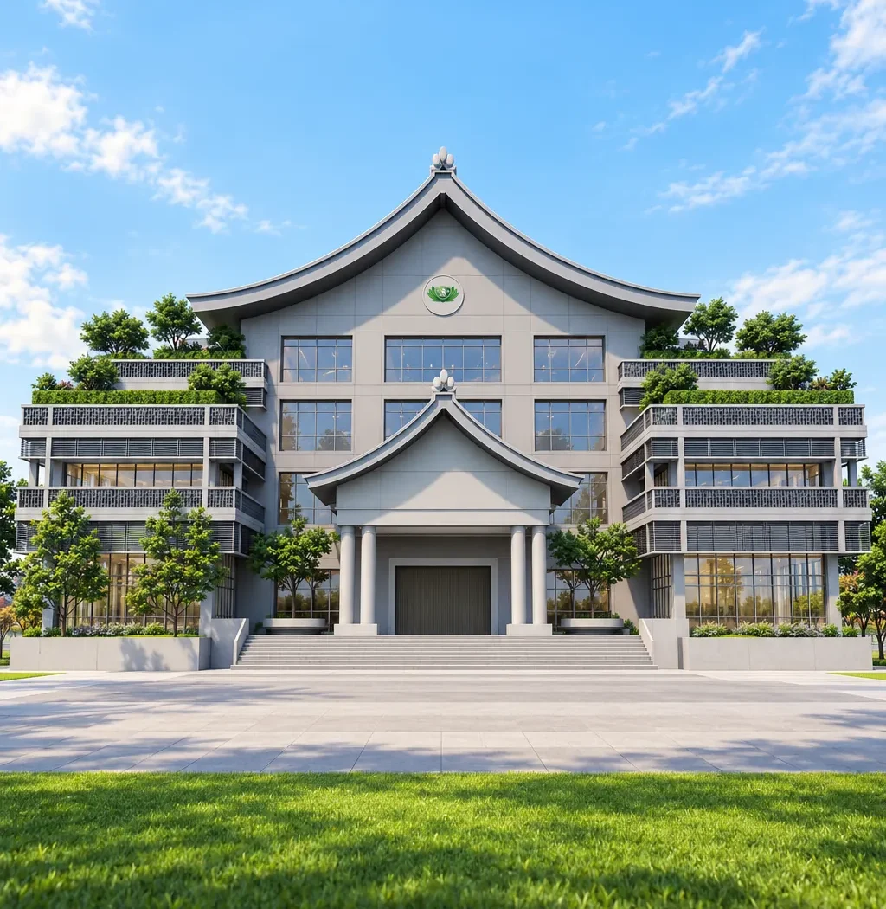
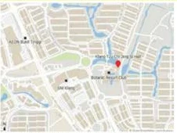
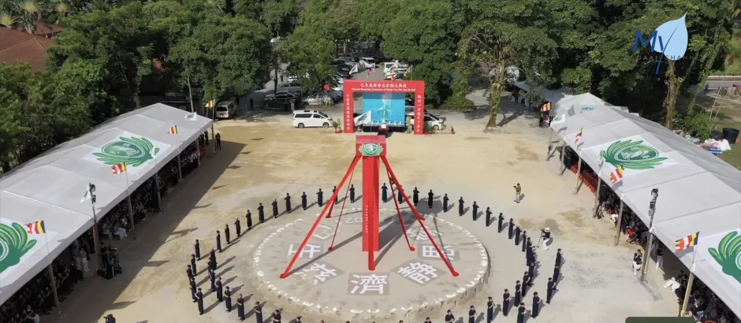
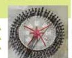
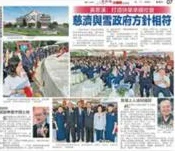

静思堂，不只是一座建筑，
它是慈悲与智慧在人间的延续，
更是一方清净福地，
启发善念、安顿身心、
温暖人心的修心道场。Jing Si Hall is more than a building.
It carries compassion and wisdom forward in the world,
a place of peace
where kind thoughts arise, body and mind find rest,
and hearts grow warm through spiritual practice.
在纷扰的时代，
我们更需要一处地方，静下心来，
听闻佛法，安住身心。In troubled times,
we need a place where we can grow still,
listen to the Dharma and settle body and mind.
慈济在巴生深耕二十余年，
陪伴苦难、推动环保、启发善念，
却始终没有一座真正属于大众的清净道场。Tzu Chi has served Klang for more than twenty years,
walking alongside those in hardship, caring for the environment and inspiring kindness.
Yet there has never been a pure place of practice here that truly belongs to everyone.
自2012 年起，志工们发心寻觅，
经历十多年的奔走与等待，
终于在 2023 年找到这块清净福地。From 2012, volunteers began searching for a site.
After more than a decade of effort and waiting,
they finally found this peaceful site in 2023.
为什么建静思堂Why we are building Jing Si Hall
台湾佛教慈济基金会缘起Origins of the Buddhist Tzu Chi Foundation in Taiwan
1966年，证严上人于台湾花莲创立佛教克难慈济功德会，在“人克难、事克难、钱克难”的情况下，毅然展开济贫工作；In 1966, Dharma Master Cheng Yen founded the Buddhist Tzu Chi Merit Society in Hualien, Taiwan. Despite a shortage of people, resources and money, she set out to help those living in poverty.
发展至今，已拓展成为立足台湾、宏观天下，慈悲足迹遍布五大洲的慈善团体。秉持印顺导师“为佛教、为众生”之教诲，在半个世纪以来，致力于推动四大志业、八大法印，即慈善、医疗、教育、人文、骨髓捐赠、国际赈灾、环境保护及社区志工。From its roots in Taiwan, Tzu Chi has grown into a charity whose work reaches across five continents. Guided by Dharma Master Yin Shun’s teaching to work “for Buddhism and for all living beings”, it has spent the past half-century advancing its Four Missions and Eight Footprints: charity, medicine, education, humanistic culture, bone marrow donation, international disaster relief, environmental protection and community volunteering.
慈济巴生缘起与成长The beginnings and growth of Tzu Chi Klang
巴生慈济共修处成立。当年承蒙志工林国华及陈银娘赠与八间店面作为慈济最早的立足点，展开了行政办事、义诊中心、静思小筑、佛堂、储藏室与厨房的多功能空间。The Klang Tzu Chi Group Practice Centre was established. Volunteers Lin Guohua (林国华) and Chen Yinniang (陈银娘) donated eight shop units, giving Tzu Chi its first foothold in Klang. The premises housed administrative offices, a free clinic, a small Jing Si reading space, a Buddha hall, storage and a kitchen.
正式成为慈济巴生联络处It officially became the Tzu Chi Klang Liaison Office.
升格为慈济巴生支会。经数年会员与志工的人数成长，空间亦不敷使用。It became the Tzu Chi Klang Branch. In the years that followed, membership and volunteer numbers grew, and the premises could no longer meet their needs.
巴生慈济行政办事处及佛堂迁移至市中心大路旁边的办公楼。空间虽能应付日常，惟大型活动仍需借用外地。Tzu Chi Klang’s administrative office and Buddha hall moved to an office building beside the main road in the town centre. The space met everyday needs, but large events still had to be held elsewhere.
自2012 年起，志工们发心寻觅，经历十多年的奔走与等待，终于在 2023 年找到这块清净福地。From 2012, volunteers began searching for a site. After more than a decade of effort and waiting, they finally found this peaceful site in 2023.
慈济静思堂空间设计与功能The spaces and roles of Jing Si Hall
- ▲ 清净修行的道场，弘扬佛法、安住身心▲ A place for quiet spiritual practice, sharing the Dharma and settling body and mind
- ▲ 社区关怀的基地，凝聚善力、陪伴弱势▲ A base for community care, bringing people together to support those in need
- ▲ 教育熏陶的园地，启发慧命、培育品格▲ A place for education, nurturing wisdom and character
- ▲ 人文环保的空间，净化人心、推广理念▲ A space for humanistic values and environmental care, cultivating kind hearts and sharing these ideals
- ▲ 灾时守护的中心，迅速动员、提供庇护▲ A centre for disaster response, mobilising quickly and providing shelter
内部设施Facilities
静思堂内部设有：讲经堂、静思书轩、社教中心、行政中心、志工培训中心、文史与影视中心等。Jing Si Hall will include a Dharma lecture hall, Jing Si Books & Café, a community education centre, an administrative centre, a volunteer training centre, and a centre for culture, history and audiovisual media.
静思堂建设概念Design approach
静思堂内部也以环保绿植建筑为目标，将采自然风、自然光和雨水回收装置，永续生态、节能减碳。Jing Si Hall is designed as an environmentally friendly building with greenery. Natural ventilation, daylight and rainwater harvesting will support long-term ecological sustainability, save energy and reduce carbon emissions.
活动与空间Activities and spaces
- 文化走廊Cultural corridor
- 讲经堂法会Dharma assemblies in the lecture hall
- 祈福点灯Prayer and lamp lighting
- 静思书轩Jing Si Books & Café
- 亲子共读Family reading
- 书画社教Calligraphy and painting classes
- 手语／志工演绎Sign language and volunteer performances
- 培训课堂Training sessions
- 社区关怀Community care
- 香积供餐Meal preparation and service
- 环保／物资发放Environmental care and supply distribution
- 社区欢聚Community gatherings
慈济巴生静思堂地段Location of Tzu Chi Klang Jing Si Hall
巴生静思堂坐落在绿林镇（Bandar Botanic），毗邻是Botanic Club House。整体占地面积2.06英亩，建筑覆盖面积1.66英亩，保留大面积绿地。Klang Jing Si Hall is in Bandar Botanic, next to the Botanic Club House. The site spans 2.06 acres, with a building footprint of 1.66 acres and a large area set aside as green space.
附近地标：Botanic Resort Club、AEON Bukit Tinggi、GM KlangNearby landmarks: Botanic Resort Club, AEON Bukit Tinggi and GM Klang

工程进度Construction progress
2026年动工，预计2028年正式启用。Construction begins in 2026, with the official opening expected in 2028.
巴生静思堂动土典礼Groundbreaking ceremony of Tzu Chi Klang Jing Si Hall
动工Construction begins
航拍：整地、打桩Aerial footage: site preparation and piling
预计正式启用Expected official opening



邀您一起护法造福Join us in upholding the Dharma and bringing blessings to others
筹募建设基金Construction Fund
点滴成河 · 点滴爱心 · 汇聚大爱Drops form a river · Each act of kindness · Together, Great Love
1. 汇款资料1. Bank transfer details
- 户名Account name
- YAYASAN TAIWAN BUDDHIST TZU-CHI MALAYSIA
- 银行Bank
- HSBC
- 户口号码Account number
- 3160 2911 5101
- 备注Transfer reference
- JSH-KLANG
备注：此项捐款无法扣税Note: This donation is not tax-deductible.
DuitNow QR 请向慈济巴生支会索取。Please contact Tzu Chi Klang Branch for the DuitNow QR code.
2. 捐款后电邮资料2. Email your details after donating
请将汇款证明、姓名、电话、地址、电邮及捐款金额电邮至 e-donationklg@tzuchi.my，并注明以下选项。Email your proof of transfer, name, phone number, address, email address and donation amount to e-donationklg@tzuchi.my, and indicate your choices below.
备注说明：Donation notes
- 请在转账备注填写: JSH-KLANGEnter JSH-KLANG in the transfer reference field.
- 本次捐款将汇入【慈济建设基金】，恕无法申请所得税减免。This donation goes to the Tzu Chi Construction Fund and is not eligible for an income tax deduction.
- 请提供您的银行汇款单及联络资料，以便开立并邮寄正式收据。Please provide your bank transfer slip and contact details so that an official receipt can be issued and posted to you.
- 汇款证明可电邮至: e-donationklg@tzuchi.myYou may email your proof of transfer to: e-donationklg@tzuchi.my
吾爱吾家嘉年华 12.12.2026（六）8am–10pm · GM KlangMy Beloved Home Carnival · Sat 12.12.2026 · 8am–10pm · GM Klang
嘉年华募心莲Carnival Lotus of Love sponsorship
一朵心莲 RM1,000RM1,000 for one Lotus of Love
汇入同一户口，汇款备注填写 FSCS2026-XB。汇款证明及联络资料请电邮至 klang@tzuchi.my，以便开立正式收据。同样汇入【慈济建设基金】，恕无法申请所得税减免。欢迎私讯所属和气的志工了解认捐详情。Transfer to the same bank account and enter FSCS2026-XB as the transfer reference. Email your proof of transfer and contact details to klang@tzuchi.my so an official receipt can be issued. This also goes to the Tzu Chi Construction Fund and is not eligible for an income tax deduction. Feel free to message your local Tzu Chi volunteers for details.
返回嘉年华主站Back to the carnival website善念一点 · 善心最美A kind thought · A kind heart is the most beautiful